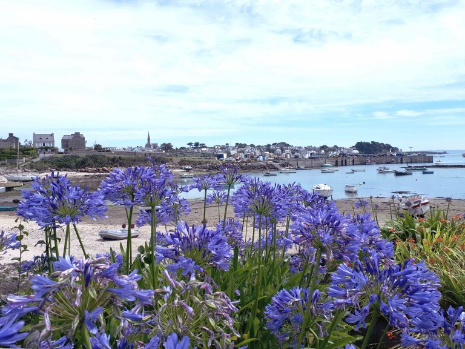

Le Finistère: L'autre bout du monde !
LES VIEILLES CHARUES
Considérés comme l'un des festivals musicaux dont les Bretons sont le plus fiers, les Vieilles Charrues existent depuis 1992 et ne cessent de créer la surprise au fil des années. Créé il y a presque 30 ans, il est rapidement devenu le plus grand festival de musique français, en termes d'entrées payantes (242 000 entrées en 2010, environ 5 500 bénévoles en 2010), entraînant un public attiré par l'affiche éclectique et l'esprit festif et convivial.
De James Brown en 1997 à Bruce Springsteen en 2009 en passant par Deep Purple, New Order, Iggy Pop, Patti Smith ou encore Arcade Fire, les Vieilles Charrues ont toujours su attirer du monde en Bretagne !
Cet été, le festival des Vieilles Charrues comptait faire son retour du jeudi 15 au dimanche 18 juillet 2021 à Carhaix, avec une flopée de talentueux artistes, dont Céline Dion. Mais la crise sanitaire change les plans du festival breton.
Tu veux en savoir plus ! : https://www.vieillescharrues.asso.fr/
L'AUTRE FINISTERE

L’AUTRE FINISTERE. LES INNOCENTS
Comprendrais-tu ma belle
Qu´un jour, fatigué
J´aille me briser la voix
Une dernière fois
A cent vingt décibels
Contre un grand châtaigner
D´amour pour toi
Trouverais-tu cruel
Que le doigt sur la bouche
Je t´emmène, hors des villes
En un fort, une presqu´île
Oublier nos duels
Nos escarmouches
Nos peurs imbéciles
Tu veux chanter ! : https://www.youtube.com/watch?v=ul33IBtf-vc
COMMON PEOPLE

She came from Greece she had a thirst for knowledge
She studied sculpture at Saint Martin's College
That's where I
Caught her eye
She told me that her dad was loaded
I said, in that case I'll have rum and Coca-Cola
She said fine
And then in thirty seconds time she said
I wanna live like common people
I wanna do whatever common people do
Wanna sleep with common people
I wanna sleep with common people
Like you
Oh what else could I do
I said I'll, I'll see what I can do
Texte sur la mer
LOCRONAN :
Homme libre, toujours tu chériras la mer !
La mer est ton miroir ; tu contemples ton âme
Dans le déroulement infini de sa lame,
Et ton esprit n’est pas un gouffre moins amer.
Tu te plais à plonger au sein de ton image ;
Tu l’embrasses des yeux et des bras, et ton coeur
Se distrait quelquefois de sa propre rumeur
Au bruit de cette plainte indomptable et sauvage.
Vous êtes tous les deux ténébreux et discrets :
Homme, nul n’a sondé le fond de tes abîmes ;
Ô mer, nul ne connaît tes richesses intimes,
Tant vous êtes jaloux de garder vos secrets !
Et cependant voilà des siècles innombrables
Que vous vous combattez sans pitié ni remord,
Tellement vous aimez le carnage et la mort,
Ô lutteurs éternels, ô frères implacables !
REFROIDISSEMENT CLIMATIQUE EN BRETAGNE

On vous avait prévenus !:
Rien n'égale en longueur les boiteuses journées,
Quand sous les lourds flocons des neigeuses années
L'ennui, fruit de la morne incuriosité,
Prend les proportions de l'immortalité.
- Désormais tu n'es plus, ô matière vivante !
Qu'un granit entouré d'une vague épouvante,
Assoupi dans le fond d'un Sahara brumeux ;
Un vieux sphinx ignoré du monde insoucieux,
Oublié sur la carte, et dont l'humeur farouche
Ne chante qu'aux rayons du soleil qui se couche.
PUMP IT UP
I've been on tenderhooks, ending in dirty looks
Listening to the Muzak, thinking 'bout this 'n' that
She said, "That's that, I don't wanna chitter-chat"
Turn it down a little bit or turn it down flat
Pump it up, when you don't really need it
Pump it up, until you can feel it
Down in the pleasure center, hell-bent or heaven-sent
Listen to the propaganda, listen to the latest slander
There's nothing underhand that she wouldn't understand
Pump it up, until you can feel it
Pump it up, when you don't really need it
Hey
She's been a bad girl, she's like a chemical
Though you try to stop it, she's like a narcotic
You wanna torture her, you wanna talk to her
All the things you bought for her, could not get a temperature
Pump it up, until you can feel it
Pump it up,…